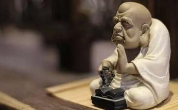

H X X师兄,山东省淄博市某电机厂工人,来自农村,侍亲至孝,为人质朴,不善言辞。每次大
H师兄文化程度不高,以下是他自述的亲身经历,由我记录、整理,文辞稍作修饰,事实并无出入:
我叫H X X,今年39岁。我母亲李X X于2007年5月份查出乳腺癌,后在山东省滨州医学院附属医院做了左乳房切除手术,术后病情暂时稳定下来。2009年7月下旬,母亲病情突然恶化,全身出现浮肿,经检查癌细胞已扩散到整个胸腹部。医生说乳腺癌一般不会扩散得这么快,病情发展到这种程度已是回天乏术,勉强治疗也是白白花钱,老人家剩下的时间不多了,不如让她回家休养,少受点罪,尽量别让她
母亲才65岁,一生为人善良,乐于助人,为这个家操劳了大半辈子,刚到了能享点福的年龄却要离我们而去了……我们全家都很伤心,我更是成夜成夜的睡不着觉,一想起小时候母亲抚育我的点点滴滴便心如刀割……这时候如果能拿我的命去换母亲的命,我想我会毫不犹豫!
就在全家人陷入绝望的时侯,我妻子从信佛同修那里请了一本“拔众生苦放生会”编印的《戒杀放生》,书中有好几个通过放生
那时我虽已信佛,但对放生还是有点半信半疑,阴历八月初一晚上念佛时,我祈求
我父母、哥哥、弟弟都不信佛,更别说拿钱放生了。为了尽最大努力挽救母亲,父亲已下了任务,我哥出一万,我和弟弟一人出五千,凑钱给母亲做化疗。我是下岗工人,现在一钢铁厂给人打工,妻子在一家超市干员,两人月收入加起来2000元左右,因为买房子还欠债12万元,拿5000元给母亲
我当时已没处借钱,但妻子修行很好,对我也很体贴,她二话没说,到处找亲戚、朋友、同事,用了不到十天时间就借来了15000元,5000给母亲化疗,10000元准备放生。于此同时我开始没日没夜地诵《地藏经》,每天诵八遍,回向给母亲的冤亲债主,希望他们与母亲解怨释结,早日往生极乐,希望母亲能够战胜病魔,身体尽快康复。
我想到附近黄河放生甲鱼,有些师兄怕黄河水太浑浊不适合甲鱼生存,我也有点犹豫,就和放生会L
为慎重起见,2009年8月10日,我买了两只甲鱼,和张清华、陈建宇两位居士一起来到黄河滨州段的一座浮桥,一边念观音
2009年8月12日上午,我们全家还有另外几位居士一起到本地海盛水产批发市场“明光水产”摊档购买了甲鱼、龟、泥鳅等物命大约数万条,善款共计12000元。其中一只大龟重25斤,据说已经有几十年
水流很急,鳖、泥鳅都很快顺水流走,唯独那只大龟迟迟不肯离去,在水里沉下去又浮上来,连续三次,每次浮出水面都转回头来看着我们,很长时间才渐渐游走远去……
这时,我九岁的女儿看到大龟远去的方向,空中出现一圈紫色的光环——据她说,光环很大,颜色很浓,就像在空中出现了一个大洞,之后光环由紫色变成七彩颜色,然后慢慢消失。
放生后第二天,我妻子打电话给老家询问母亲病情,不可思议的事情发生了!——父亲很高兴地说,母亲全身浮肿已经消退,情况很稳定,精神健旺了许多,也能吃得下饭了。
之后,母亲的身体竟一天比一天好转,一个月后,再次去医院检查,除了血糖偏高(我母亲原来就有糖尿病),其他指标均正常,竟然完全康复了!医生不敢相信,我们全家更是不敢相信,然而,事实摆在面前,奇迹就这样发生了!
现在,我母亲除了有点虚弱之外,其他和常人完全一样,每天在家里看看孩子,做做家务,平安喜乐,安享晚年。谁也看不出来,几个月前,她还是个被医院判了死刑的癌症晚期病人!
借的钱可以慢慢还,只要人在,我就仍有机会陪母亲唠唠嗑,仍有机会为老人捶捶腿,我女儿还可以在她怀里撒撒欢,我还拥有一个完整的家!感谢
以前因为经济问题、
以前,我打工的工厂领导,总是看我不顺眼,我工作再卖力也没用,常常借故找我的麻烦。有时我都不想干了,但现在工作不好找,只好忍耐。现在,厂领导对我的态度越来越和善,再不随便找碴“修理”我了,转变之大,我自己都觉得奇怪!我妻子在单位也比以前更顺,工作之余,还接了点零活干,经济上也比以前宽裕多了。
三、身体变好了:因为常加夜班,我以前总感觉全身无力,没有精神。现在多数时候都精神很足,感觉浑身是劲。以前我有严重的“恐高症”,一到高处就腿软、脚发麻,心里害怕,现在这些现象都没有了。这次放生后大约一个月,一天晚上,我念佛号两小时后,心里越来越沉静,慢慢的,连佛号也忘了……这时,眼前渐渐现出一个大刺猬的形象
我老家在山东滨州农村,因为孩子多,从小家里就穷,八岁时,一家人还住土胚房,两个明间一个里间。那年秋天的一个晚上,天已经很黑,我母亲听到里屋有动静,就拿着手电筒进去看,发现地上有一只刺猬,个头很大,抬头望着母亲,眼光挺和善,一点不怕人,也不知怎么进屋的。
我母亲生性善良,从小就喜欢小猫小狗,对虫子、蚂蚁等都十分爱护,从不伤害。那时也不知道什么叫放生,因为怕别人看见害了它,就让我找个小筐把它装进去提到村头野地放了。这时,我家院后一个邻居来串门,母亲就叫他陪我一起去,当时也不知道他是怎么想的,他领着我到了村南头水湾边,找了个大坑把大刺猬扔进去,用石头把它砸昏,然后再盖上土,就这样把它活埋了(忏悔)!那时我年龄小,也不懂他在干吗,只有眼睁睁看着……
这时候,眼前的刺猬,逐渐变成了一个小孩的形象,感觉他对我说,我母亲前世曾救过他的命,几十年前,他到我家,本来是去报恩的,如果不被打死,我家能发大财,可是竟被邻居砸死活埋了,而且死得很
我从定中清醒过来,豁然明白,这是菩萨在点化我母亲得病的因缘,同时也是在坚定我精进修行的
从十四岁开始,我就经常做同一个梦,梦见警察开着警车追我,心里很害怕,有时会从梦中惊醒!那次放生后的一天晚上,梦见一个熟人用自行车载我过桥,这时,出现一个便衣警察把我叫住,对我说以后不要再犯法了,再犯法就要你的命,说完就走了。这时我也醒了,就去上厕所,在厕所地上竟然看到一只“湿湿虫”,当时正是寒冬,我房间也没有暖气,而这种虫子只在春夏两季,天气暖和时才有。
不由想起少年时,大概十四岁左右,我和哥哥常去农田刨地,我们刨地用的工具叫“沙耙子”,是用几根铁
这件事之后,我再也没梦见过警车追我,睡觉安稳了很多。我哥哥一直患鼻炎,长年治不好,从那之后,竟然也不再发作了!我想通过念佛、放生,当年杀死大量小虫的罪业可能已经消除了!
我母亲病愈后,我对放生有了极大信心!开始积极参加“拔众生苦放生会”组织的所有活动。2009年10月25日,阴历九月初八,放生会组织到高青大芦湖大放生。放生途中,我一直在念佛号,感觉很清净。客车下高速路口时,突然看见一尊
放生后第三天,也就是阴历九月十一早晨四点左右,我梦见家里一个男孩娶媳妇,家里人都忙活着给孩子操办婚礼,但他有新房子不住,非要住在老房子里。梦境很清晰,醒来后我明白,通过放生,又了却了一桩业力!——1995年,妻子曾堕过一次胎,从那之后,我经常梦见有小孩挡路,经济也变得紧张,生活工作各方面都开始不顺。那次放鳖之后,曾梦见小孩已经八岁了,长得很精神。这次,又梦见他已结婚成家,看来孩子已经放过我们,不来讨债了。
每次参加放生,我都越来越深地体会到:所有的生命都是平等的,都是无比珍贵的!也越来越深地理解了“诸功德中,放生第一”这句话的含义!
当你真正领教世事的难料,当你真正面对生命的无常,当你眼睁睁看着最亲近的人即将逝去却束手无策,当你恨不得拿自己的生命去交换却无能为力……只有在身临其境的那一刻,你才会明白:金钱、美色、权利、名誉……等等等等你为之营营苟苟、忙忙碌碌的一切,在生命面前都是那么苍白,那么毫无意义!那时你会毫不犹豫放弃这一切来换取哪怕多一秒种的生命!只是,很多人真正明白的时候,很多事已经为时太晚……
趁您还有大把的时光,趁您还有
通过以上亲身经历,我更坚定了精进修行,跳出轮回的信心!现在,我已经吃全素,除了正常工作,业余时间大部分都用来修行,除了参加放生,每天都会坚持念佛号五小时,或诵《地藏经》五遍,感觉杂念越来越少,心地越来越清净,业力越来越轻,生活也越来越幸福。
拔众生苦放生会常年坚持不懈组织放生,编印